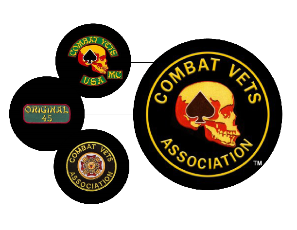

Patches which have contributed to the current Full Member patch
History of the Combat Veterans Motorcycle Association
In 1999, the Combat Vets Motorcycle Club (CVMC) was introduced to the internet. Initially it was believed that the CVMC was an actual established motorcycle organization but, in early 2001, it was discovered that it was simply an internet scam designed to milk money from combat veterans.
Still wanting to remain organized for the purpose of supporting veterans issues, forty-five members decided to form a Combat Veterans Association. In May of 2001 the Combat Veterans Motorcycle Association was started as a non-profit organization, allowing its members to continue working toward their main objective of helping veterans.
The original 45 members have adopted a patch to wear indicating that they are the original founding members of CVMA.
In May of 2001, the CVMA adopted the CVMA / VFW patch. This was done with the VFW's permission as all CVMA members were or became VFW members, entitling them to wear the VFW patch. Over the next year and a half the CVMA was well accepted at Post and Division levels within the VFW, but repeated meetings, letters, and conversations with the VFW National failed to define an officially recognized relationship between CVMA and VFW.
In December of 2002, the CVMA membership voted to begin moving towards officially establishing the type of association its members wanted to be, independent of the VFW or any other organization. As part of this decision, VFW membership was no longer required, opening the CVMA up to all Combat Veterans who ride a motorcycle.
On December 15, 2002, it was voted that the CVMA would wear a combination of the CVMA / VFW background and the old CVMC skull logo as a one piece patch. Membership requirements being that a new member had to be a combat veteran and had to ride a motorcycle as a hobby. This patch is worn by Full Combat Members only.

Connect With Us
For technical issues, contact the webmaster.